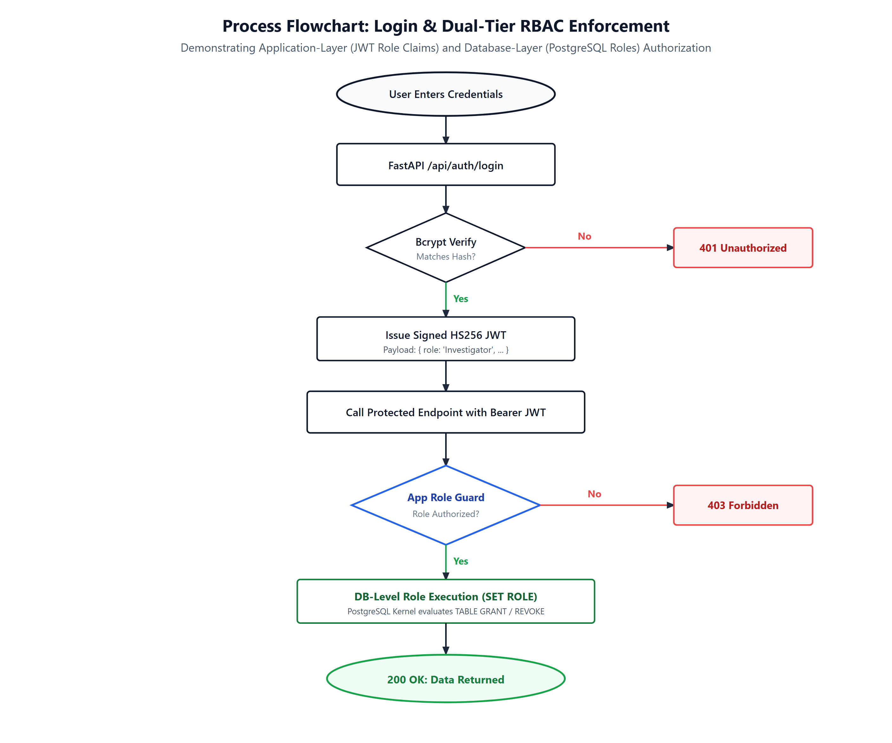

Role-based access control is enforced at two distinct layers:
require_role(["Admin", "Investigator"])).ifp_admin, ifp_investigator, ifp_auditor) with table-level GRANT and REVOKE privileges enforced by the PostgreSQL query processor, independent of application code.
Table 1 outlines operational capabilities across five user roles.
| Security Role | API Endpoints Permitted | PostgreSQL Role & Grants | Restricted Operations (403 Forbidden) |
|---|---|---|---|
| Administrator ( ADMIN) |
All endpoints: /api/*, /api/officers, provisioning. |
ifp_adminALL PRIVILEGES on all public tables & sequences. |
None. Has full root administrative access. |
| Lead Investigator ( INVESTIGATOR) |
Cases, People, Evidence, Search, Graph traversal. | ifp_investigatorSELECT, INSERT, UPDATE on cases, evidence, people. |
Cannot provision officers (POST /api/officers). Cannot delete cases (REVOKE DELETE). |
| Intelligence Analyst ( ANALYST) |
Cases (Read), Search, Analytics, Aggregations, Vector retrieval. | ifp_analystSELECT on all entities; INSERT on documents. |
Cannot modify primary case details or transfer evidence custody. |
| Evidence Officer ( EVIDENCE_OFFICER) |
Evidence locker, custody transfers (POST /api/evidence/*/custody). |
ifp_custodySELECT, UPDATE on evidence; INSERT on custody. |
Cannot create new cases or modify intelligence documents. |
| External Auditor ( AUDITOR) |
Strictly Read-Only (GET /api/*). Viva inspection. |
ifp_auditorSELECT ONLY across all 22 tables. |
All write operations (INSERT, UPDATE, DELETE) rejected with SQL 42501. |
The listing below shows the actual SQL definitions from database/sql/roles-and-grants.sql.
-- Role 1: System Administrator CREATE ROLE ifp_admin WITH LOGIN PASSWORD 'AdminSecure2026!'; GRANT USAGE, CREATE ON SCHEMA public TO ifp_admin; GRANT ALL PRIVILEGES ON ALL TABLES IN SCHEMA public TO ifp_admin; -- Role 2: Field Investigator (Read-only on officers, append-only on audit logs, no deletions) CREATE ROLE ifp_investigator WITH LOGIN PASSWORD 'InvestigatorPass2026!'; GRANT USAGE ON SCHEMA public TO ifp_investigator; GRANT SELECT ON officers TO ifp_investigator; GRANT SELECT, INSERT, UPDATE ON cases, people, vehicles, devices, locations, evidence TO ifp_investigator; GRANT SELECT, INSERT ON case_activity, evidence_custody TO ifp_investigator; REVOKE DELETE ON cases, evidence, evidence_custody, case_activity FROM ifp_investigator; -- Role 3: External Read-Only Auditor CREATE ROLE ifp_auditor WITH LOGIN PASSWORD 'AuditorReadOnly2026!'; GRANT USAGE ON SCHEMA public TO ifp_auditor; GRANT SELECT ON ALL TABLES IN SCHEMA public TO ifp_auditor; REVOKE INSERT, UPDATE, DELETE, TRUNCATE ON ALL TABLES IN SCHEMA public FROM ifp_auditor;
We ran our automated verification harness (scripts/demonstrate_db_rbac.py) to test security enforcement under real network requests.
===========================================================================
PART 1: SERVER-SIDE API RBAC ENFORCEMENT (FastAPI + JWT)
===========================================================================
[1] Authenticating as Field Investigator (CID-002)...
-> Token Granted. Role: INVESTIGATOR
[2] Investigator attempting to read officer directory (GET /api/officers)...
-> Response Status: 200 OK (Permitted read-only access)
[3] Investigator attempting to provision new officer credential (POST /api/officers)...
-> Response Status: 403 FORBIDDEN
-> Server Detail: "Access forbidden: Officer provisioning and credential management requires ADMIN clearance."
[PASS] Server-side 403 Forbidden successfully enforced against investigator token.
[4] Authenticating as System Administrator (CID-001)...
-> Token Granted. Role: ADMIN
[5] Administrator provisioning new officer credential (CID-DEMO-9582)...
-> Response Status: 201 CREATED
-> Officer Provisioned: CID-DEMO-9582
[PASS] Admin authorization validated.
===========================================================================
PART 2: DATABASE-LEVEL POSTGRESQL RBAC VERIFICATION
===========================================================================
PostgreSQL Role Privileges Definition (as compiled in database/sql/roles-and-grants.sql):
ROLE: ifp_admin
- Schema public: USAGE, CREATE
- All public tables: ALL PRIVILEGES (SELECT, INSERT, UPDATE, DELETE, TRUNCATE)
ROLE: ifp_investigator
- Schema public: USAGE
- officers: SELECT ONLY (Read-only on personnel credentials)
- case_activity, evidence_custody: SELECT, INSERT (Immutable append-only audit)
- cases, people, vehicles, devices, locations, evidence: SELECT, INSERT, UPDATE
- Explicit Revocation: REVOKE DELETE ON cases, evidence, evidence_custody, case_activity
- Result: Attempting `DELETE FROM cases` throws SQL Error: 42501 (permission denied)
ROLE: ifp_auditor
- Schema public: USAGE
- All tables: SELECT ONLY (Strict read-only viva inspection role)
- Result: Attempting `INSERT / UPDATE / DELETE` throws SQL Error: 42501 (permission denied)
===========================================================================
RBAC VERIFICATION HARNESS COMPLETED SUCCESSFULLY
===========================================================================